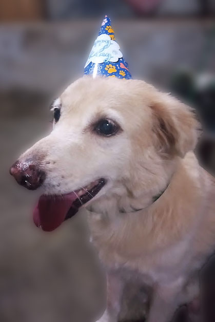
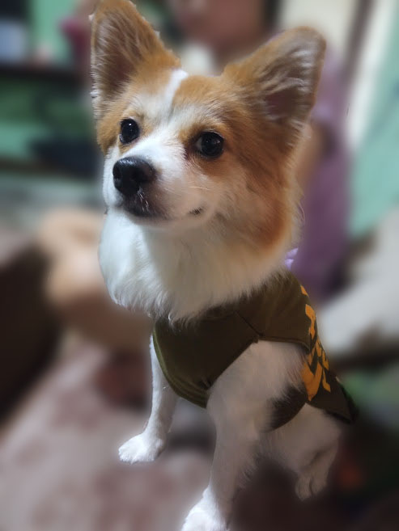
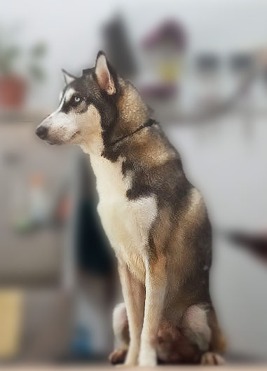

Hello! I'm Gench, and I wear many hats in life, both in the digital realm and in my own garden. I'm a passionate freelance web developer, and I love taking care of my three adorable dogs and tending to my green sanctuary. Allow me to give you a glimpse into my world where creativity grows online and offline.
As a freelance web developer, I thrive on turning ideas into digital reality. With a strong foundation in the fundamentals of web design and a knack for problem-solving, I craft engaging, user-friendly websites that tell unique stories. My commitment to clean code and responsive design ensures that your online presence not only looks stunning but also functions flawlessly.
Beyond the pixels and code, my heart finds solace in my lush garden. My gardening journey has taught me patience, resilience, and the art of nurturing. From delicate roses to vibrant vegetables, every plant holds a story of growth and beauty. If I'm not at my computer, you'll likely find me in my garden, tending to my plants with a sense of wonder and tranquility.

I share my home with three furry companions who are not only my faithful friends but also endless sources of joy and inspiration. Meet Talip, Peanut, and Mavi – each with their own unique personality. They remind me of the importance of play, love, and the simple joys of life.

Incorporating my love for web development, gardening, and my furry friends into my life has been a journey of balance and fulfillment. Whether I'm crafting a website or nurturing a plant, I approach each endeavor with dedication, creativity, and an unwavering commitment to excellence.
If you're interested in collaborating, have a web project in mind, or simply want to chat about web development, gardening, or dogs, feel free to reach out. I'm always excited to connect with fellow enthusiasts and potential clients.
Thank you for visiting my corner of the web, and I look forward to connecting with you soon!